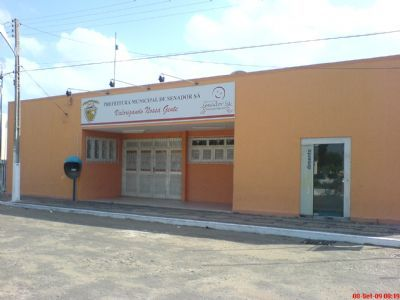

Geoinfos
Informações técnicas sobre relevo, população, IDH etc.
| INFORMAÇÕES | |
|---|---|
| Municípios limítrofes | Norte: Granja e Marco; Sul: Massapê; Leste: Morrinhos e Marco; Oeste: Martinópole, Uruoca e Moraújo |
| Fundação | 23 de agosto 1957 (63 anos) |
| Área total | 430,580 km² |
| Clima | tropical semiárido brando (As)[3] |
| IDH | 0,6 — médio |
| PIB | R$ 23 856,103 mil |
| INFORMAÇÕES TERRITORIAIS | |
|---|---|
| Número de habitantes | 7 623 habitantes |
| Superfície de Senador Sá |
42 392 hectares
423,92 km² (163,68 sq mi) |
| Densidade populacional | 18,0 ha./km² |
| Altitude de Senador Sá | 85 metros de altitude |
| Coordenadas geográficas decimais |
Latitude:
-3.34825
Longitude: -40.4609 |
| Coordenadas geográficas sexagesimais | Latitude: 3° 20' 54'' Sul , Longitude: 40° 27' 39'' Oeste |
| INFORMAÇÕES DO MUNICÍPIO | |
|---|---|
| Endereço da Prefeitura Municipal de Senador Sá |
Senador Sá
Prefeitura de Senador Sá
Av. 23 de Agosto, s/n - Centro SENADOR SÁ - CE, 62470-000 Brasil Work +55 88 3668-1089 Fax +55 88 3668-1033 |
| Telefone da prefeitura |
(88) 3668-1089
Internacional: +55 88 3668-1089 |
| Fax |
(88) 3668-1033
Internacional: +55 88 3668-1033 |
| Endereço electrónicoda prefeitura |
A carregar...
|
| Site oficial do município | senadorsa.ce.gov.br |
| INFORMAÇÕES DO ADMINISTRATIVAS | ||
|---|---|---|
| Prefeito de Senador Sá | JOSÉ MARTINS BARROS JUNIOR | |
| Partido politico | PP | |
| INFORMAÇÕES DE TRANSPORTE | |
|---|---|
| Transporte urbano disponível | - |
| Aeroporto |
Aeroporto de Sobral
39.6 km
Aeroporto Internacional Pinto Martins
64.9 km
Aeroporto Internacional Prefeito Dr. João Silva Filho
150.1 km
|
| INFORMAÇÕES DE DISTÂNCIA A OUTRAS CIDADES | ||
|---|---|---|
| São Paulo : 2345 km | Rio de Janeiro : 2197 km | Brasília : 1608 km |
| Salvador : 1092 km | Belo Horizonte : 1872 km | Manaus : 2175 km |
| Curitiba : 2633 km | Fortaleza : 217 km mais perto | Goiânia : 1768 km |
| Belém : 919 km | Porto Alegre : 3179 km | Guarulhos : 2325 km |
| Campinas : 2291 km | São Luís : 437 km | Recife : 810 km |
| Distância calculada em linha reta! | ||
Fonte: Wikipedia e Cidade Brasil
História
Conheça mais sobre a história de Senador Sá.
Senador Sá Ceará - CE
Em região de aspecto sertanejo, com características a este peculiares, surgiu o povoado inicialmente denominado Pitombeiras. Era distrito de Massapê, a ele anexado pela lei nº 1.858, de 9 de setembro de 1921, quando a instalação do novo município. O decreto-lei nº 448, de 20 de dezembro de 1938 mudou o nome para Senador Sá que era o da estação da Estrada de Ferro de Sobral, aí instalada, dado em homenagem ao Senador Francisco Sá, mineiro de nascimento, mas de influência na política do Ceará, estado que representou no Senado Federal.
Gentílico: senadorsaense Formação Administrativa Distrito criado com a denominação de Pitombeiras, pela lei nº 1858, de 09-09-1921, subordinado ao município de Massapé. Em divisão administrativa referente ao ano de 1933, o distrito de Pitombeiras figura no município de Massapé. Assim permanecendo em divisões territoriais datadas de 31-XII-1936 e 31-XII-1937. Pelo decreto estadual nº 448, de 20-12-1938, o distrito de Pitombeiras passou a denominar-se Senador Sá. No quadro fixado para vigorar no período de 1944-1948, o distrito já denominado Senador Sá, permanece no município de Massapé. Assim permanecendo em divisão territorial datada de 1-VII-1955.
Elevado à categoria de município com a denominação de Senador Sá, pela lei estadual nº 3762, de 23-08-1957, desmembrado de Massapé. Sede no antigo distrito de Senador Sá. Constituído de 3 distritos: Salão e Serrota e Crôa dos Angicos, ambos desmembrados com áreas do distrito sede Senador Sá. Instalado em 25-09-1959.
Em divisão territorial datada de 1-VII-1960, o município é constituído de 4 distritos: Senador Sá, Salão, Serrota, Crôa dos Angicos. Assim permanecendo em divisão territorial datada de 2005. Alteração toponímica distrital Pitombeiras para Senador Sá alterado, pelo decreto estadual nº 448, de 20-12-1938.
Pontos Turísticos
Saiba mais sobre os melhores lugares e o que fazer em Senador Sá.
BALNEÁRIO ILHA DA FANTASIA Endereço: Distrito de Serrota - Senador Sa - CE CEP 62470-000
BALNÁRIO BRISA DA SERRA Endereço: Vilarejo de Penedo - Senador Sá
PREFEITURA MUNICIPAL SENADOR SÁ Endereço: Av 23 de Agosto - Centro
BIBLIOTECA MUNICIPAL SENADOR SÁ Endereço: Rua Padre Tarcisio, 112

Como Chegar?
Veja como chegar nos melhores pontos de Senador Sá
SAIBA COMO CHEGAR EM SENADOR SÁ